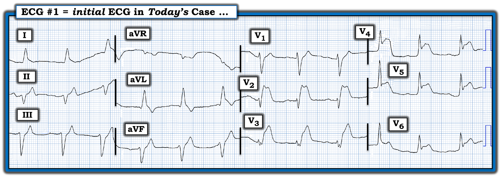
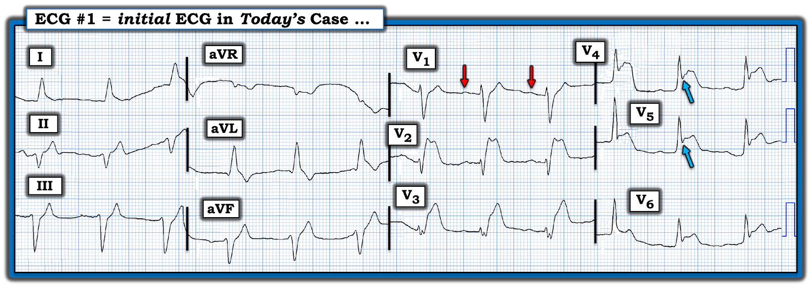
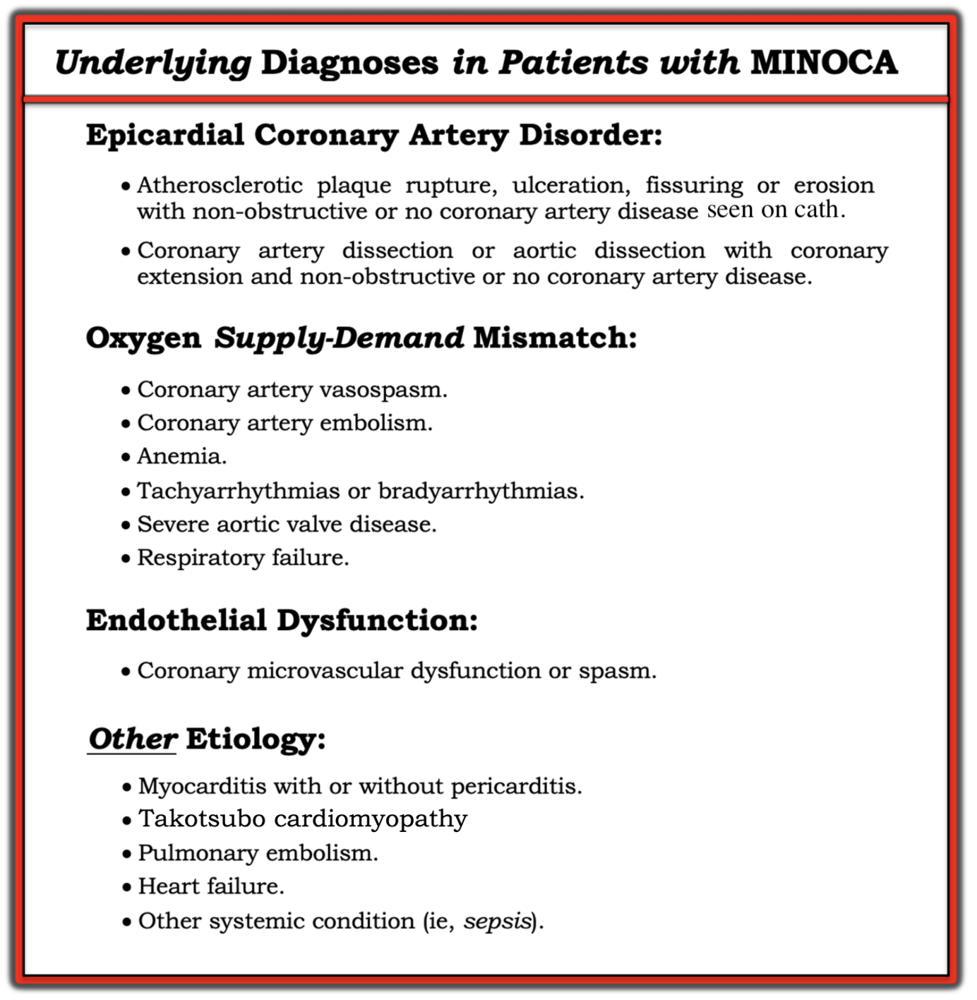

ECG Blog #415 — Thông tim KHÔNG thấy tắc!
Bệnh nhân hôm nay là một phụ nữ lớn tuổi đã có nhiều cơn ngất trong tuần trước đó. Không đau ngực (CP — Chest Pain). Ngay sau khi đến khoa cấp cứu (ED — Emergency Department) — bà bị ngừng tim. Điện tâm đồ ở Hình-1 được ghi sau khi hồi sức thành công.
- Siêu âm tim khẩn — thực hiện ngay sau khi hồi sức thành công cho thấy thành trước vô động.
- NHƯNG — Thông tim thực hiện sau đó một chút lại không phát hiện hẹp đáng kể nào.
CÂU HỎI:
- Với bệnh sử nêu trên — BẠN sẽ đọc điện tâm đồ ở Hình-1 như thế nào?
- Làm sao giải thích việc không tìm thấy động mạch “thủ phạm” nào khi thông tim?
- Thế nào là T-QRS-D? Dấu hiệu điện tâm đồ này có mặt trên điện tâm đồ ban đầu hôm nay không?


SUY NGHĨ CỦA TÔI về CA BỆNH hôm nay:
May mắn thay — bệnh nhân hôm nay đã được hồi sức thành công sau cơn ngừng tim. Mặc dù thông tim sau ngừng tim không thấy hẹp mạch vành đáng kể — điện tâm đồ ở Hình-1 rõ ràng đủ để chẩn đoán một STEMI trước-bên diện rộng (có lẽ do tắc cấp động mạch LAD [động mạch liên thất trước — Left Anterior Descending] ).
- Nhịp ở điện tâm đồ #1 đều, trên thất, tần số ~75/phút. Mặc dù tôi không thấy rõ sóng P xoang ở chuyển đạo II (tức là chỉ nhát thứ 1 có vẻ có sóng P dương ở chuyển đạo II) — phức bộ QRS hẹp ở cả 12 chuyển đạo, và có thấy một sóng P nhỏ, dương với khoảng PR cố định ở chuyển đạo V1 (mũi tên ĐỎ ở Hình-2).
- Có trục lệch trái rõ rệt (LAD — Left Axis Deviation) — với phức bộ chủ yếu âm ở chuyển đạo II, phù hợp với LAHB (blốc phân nhánh trái trước — Left Anterior HemiBlock).
- Không lớn buồng tim.
Về Thay đổi Q-R-S-T:
- Sóng Q — Ở chuyển đạo aVL thấy một sóng Q rất nhỏ nhưng hơi rộng, chưa rõ ý nghĩa. Ở mỗi chuyển đạo thành dưới đều thấy sóng R khởi đầu nhỏ xíu nhưng có mặt (phù hợp với LAHB — nhưng không chỉ điểm nhồi máu thành dưới).
- Tăng tiến sóng R — Mặc dù thấy sóng R khởi đầu ở các chuyển đạo trước V1,V2,V3 — có mất biên độ sóng R từ chuyển đạo V1 sang V2.
- Thay đổi ST-T — Thay đổi nổi bật nhất là ST chênh lên rõ rệt bắt đầu từ chuyển đạo V2 — và vẫn đáng kể trong suốt các chuyển đạo trước tim còn lại. Sóng T ở các chuyển đạo thành dưới trông nhọn hơn dự kiến so với biên độ QRS ở các chuyển đạo này — và có ST-T chênh xuống soi gương ở chuyển đạo aVL.
- Có T-QRS-D (biến dạng phần cuối QRS — Terminal QRS Distortion) ở các chuyển đạo V4,V5,V6 (mũi tên XANH ở Hình-2) — như sẽ bàn chi tiết dưới đây).
NHẬN ĐỊNH về điện tâm đồ hôm nay:
Như đã nhấn mạnh ở trên — điện tâm đồ sau ngừng tim ở Hình-2 rõ ràng đủ để chẩn đoán một STEMI trước-bên diện rộng.
- Theo những gì có thể biết từ bệnh sử được cung cấp — bệnh nhân này có ngất nhưng không đau ngực trước biến cố cấp. Như đã bàn chi tiết trong ECG Blog #228 — trường hợp này dường như đủ tiêu chuẩn là một nhồi máu cơ tim “thầm lặng” (Khoảng một nửa số ca nhồi máu cơ tim không kèm đau ngực — có một triệu chứng đi kèm khác như ngất, đóng vai trò “tương đương đau ngực”).
- Việc thông tim thực hiện ngay sau hồi sinh tim phổi không phát hiện hẹp mạch vành đáng kể nào (tức là Không có bằng chứng về động mạch “thủ phạm” nào) — khiến ca hôm nay đủ tiêu chuẩn là MINOCA ( = nhồi máu cơ tim không có tắc nghẽn động mạch vành — MI with Non-Obstructive Coronary Arteries — mà tôi sẽ bàn chi tiết dưới đây).


========================
Thế nào là T-QRS-D?
Khái niệm Terminal QRS Distortion — biến dạng phần cuối QRS (T-QRS-D) là điều tôi chưa từng biết trước khi trở thành Phó Biên tập viên của Dr. Smith's ECG Blog. Từ đó đến nay tôi đã gặp nhiều ca lâm sàng xác nhận giá trị của dấu hiệu điện tâm đồ này do BS. Stephen Smith đề xướng.
- T-QRS-D — được định nghĩa là không có cả sóng J lẫn sóng S ở chuyển đạo V2 — và/hoặc chuyển đạo V3 — và/hoặc chuyển đạo V4 (T-QRS-D có thể gặp ở các chuyển đạo khác ngoài V2,V3,V4 — nhưng ý nghĩa lâm sàng khi T-QRS-D chỉ thấy ở các chuyển đạo khác thì kém chắc chắn hơn).
- LƯU Ý: T-QRS-D định nghĩa thì đơn giản. Tuy vậy — dấu hiệu điện tâm đồ này có thể rất kín đáo! Tôi hoàn toàn thừa nhận rằng tôi đã mất một thời gian mới thấy thoải mái và tự tin khi nhận ra nó.
- Ý nghĩa lâm sàng: Khi có mặt — T-QRS-D có thể hỗ trợ vô giá trong việc phân biệt giữa biến thể tái cực và OMI cấp. Khi có T-QRS-D thật sự ở bệnh nhân có triệu chứng mới — dấu hiệu này gần như chẩn đoán xác định OMI cấp ( = nhồi máu cơ tim do tắc động mạch vành cấp — acute coronary Occlusion Myocardial Infarction).
Một bức hình đáng giá 1,000 lời. Tôi minh họa dấu hiệu điện tâm đồ T-QRS-D dưới đây ở Hình-3, được trích từ Bình luận của tôi trong bài đăng ngày 14 tháng 11 năm 2019 trên Dr. Smith's ECG Blog. Tôi đã lấy các ví dụ chuyển đạo V3 ở Hình-3 từ các ca đã đăng trước đây trên Dr. Smith’s ECG Blog:
- PHÍA TRÊN ở Hình-3 — Mặc dù ST chênh lên rõ rệt ở chuyển đạo V3 này — đây không phải T-QRS-D, vì có khía ở điểm J (mũi tên XANH) rõ ràng. Bệnh nhân này có biến thể tái cực là nguyên nhân gây ST chênh lên.
- PHÍA DƯỚI ở Hình-3 — Đây là T-QRS-D, vì ở chuyển đạo V3 này không có khía ở điểm J — và không có sóng S (mũi tên ĐỎ cho thấy sóng lệch cuối cùng của QRS không hề đi xuống dưới đường nền để tạo thành sóng S).

Hình-3: So sánh ST chênh lên ở chuyển đạo V3 do biến thể tái cực (PHÍA TRÊN — từ bài 4/27/2019) — và OMI cấp (PHÍA DƯỚI — từ bài 9/20/2015), trường hợp có biểu hiện T-QRS-D (Xem bài).
========================
Thế nào là MINOCA?
Tôi ngờ rằng thực thể được gọi là MINOCA (nhồi máu cơ tim không có tắc nghẽn động mạch vành — MI with Non-Obstructive Coronary Arteries) — chưa được nhiều bác sĩ lâm sàng đánh giá đúng mức.
- Tôi đã ngạc nhiên khi biết rằng ước tính 5-15% bệnh nhân (tùy quần thể nghiên cứu) được chẩn đoán hoặc STEMI hoặc NSTEMI — hóa ra lại là MINOCA, trong đó thông tim không phát hiện động mạch liên quan đến vùng nhồi máu nào (tức là không có mạch "thủ phạm" nào hẹp ít nhất 50%) — và không tìm thấy căn nguyên toàn thân rõ ràng nào giải thích được lý do bệnh nhân nhập viện (Tamis-Holland và cs.: Tuyên bố khoa học của AHA về MINOCA — Circulation 139:e891-e908, 2019 — Broncano và cs. — RadioGraphics 41:8-31, 2021 — và — Sykes và cs. — Interventional Card Review 16:e10, 2021).
Vì vậy tôi rất hứng thú với ca hôm nay — trong đó một phụ nữ lớn tuổi đến viện vì ngất và ngừng tim (nhưng không đau ngực) — với điện tâm đồ như ở Hình-2 (cùng với thành trước vô động trên siêu âm tim) — nhưng không có bệnh mạch vành tắc nghẽn nào khi thông tim.
- Vì mọi người làm cấp cứu thỉnh thoảng đều sẽ gặp MINOCA (tức là tỷ lệ MINOCA ước tính 5-15% mà tôi nêu ở trên, ở những bệnh nhân ban đầu được chẩn đoán STEMI hoặc NSTEMI) — tôi bổ sung Hình-4, tóm tắt các thực thể thường gặp hơn liên quan đến MINOCA (Hình này đã được đăng trước đây trong Bình luận của tôi ở bài đăng ngày 30 tháng 11 năm 2022 trên Dr. Smith's ECG Blog).
- Một quan niệm sai quá phổ biến là cho rằng việc không có bệnh mạch vành tắc nghẽn khi thông tim sẽ loại trừ tắc động mạch vành cấp là nguyên nhân gây biến cố cấp của bệnh nhân. Điều này không đúng. Bệnh mạch vành không tắc nghẽn vào thời điểm thông tim không nhất thiết có nghĩa là đã không có nứt vỡ mảng xơ vữa kèm huyết khối. Đó là vì các mảng xơ vữa không gây tắc nghẽn vẫn có thể nứt, tạo huyết khối, gây tắc hoàn toàn (hoặc gần hoàn toàn), rồi tự ly giải (huyết khối tự tan kèm tái tưới máu) — mà khi chụp mạch vẫn chỉ hẹp dưới 50%.
- Những mảng xơ vữa như vậy thường sẽ không được nhận ra là "thủ phạm" — vì không thấy nứt hay loét. Do đó — ở những bệnh nhân này, tổn thương mảng xơ vữa chỉ có thể được chẩn đoán bằng chẩn đoán hình ảnh trong lòng mạch vành — với OCT (chụp cắt lớp quang học — Optical Coherence Tomography) có độ phân giải cao hơn hoặc IVUS (siêu âm trong lòng mạch — IntraVascular UltraSound).
- Điểm MẤU CHỐT lâm sàng: Mặc dù thông tim không thấy bệnh mạch vành tắc nghẽn — nguyên nhân thường gặp nhất của MINOCA có lẽ vẫn là một OMI cấp đã tự tái tưới máu (chỉ có điều là không còn thấy được vào thời điểm thông tim).
Các điểm bổ sung về MINOCA:
Tôi ngạc nhiên khi biết rằng việc mô tả nhồi máu cơ tim cấp mặc dù mạch vành bình thường không phải là một khái niệm mới — nó đã được mô tả lần đầu cách đây ~80 năm (và thuật ngữ "MINOCA" cuối cùng được chấp nhận vào năm 2013).
- 3 Nguyên nhân thường gặp nhất gây ACS (hội chứng vành cấp — Acute Coronary Syndrome) không có bệnh mạch vành là: i) Viêm cơ tim (tới 1/3 số bệnh nhân này); ii) Bệnh cơ tim Takotsubo; và, iii) MINOCA.
- Có xu hướng những bệnh nhân này trẻ hơn — với tỷ lệ nữ giới tương đối cao hơn — và ít yếu tố nguy cơ tim mạch truyền thống hơn.
- Tiên lượng dài hạn của bệnh nhân MINOCA rõ ràng phụ thuộc vào căn nguyên nền. Tuy vậy — điều quan trọng cần nhận thức là thực thể này không lành tính, với tỷ lệ tử vong tương tự bệnh nhân có bệnh mạch vành tắc nghẽn sau nhồi máu.
- MRI tim — giúp xác định căn nguyên ở hơn 2/3 số trường hợp bệnh nhân MINOCA.
- MRI tim nhận diện thành công ~80% bệnh nhân viêm cơ tim cấp nhờ phát hiện bằng chứng viêm — với ưu điểm rõ rệt là không xâm lấn so với sinh thiết nội mạc cơ tim.
- Sử dụng LGE (ngấm thuốc gadolinium muộn — Late Gadolinium Enhancement) — được khuyến cáo thường quy khi chụp MRI tim để tăng hiệu quả chẩn đoán, như một phương tiện nhận diện xơ hóa và các bất thường khác của mô tim.
- MRI tim (đặc biệt khi có thêm LGE) giúp hiểu rõ tiên lượng dài hạn của bệnh nhân MINOCA.


LƯU Ý: Theo Sykes và cs. — Các thực thể được liệt kê trong mục "Căn nguyên khác" có thể được chẩn đoán sau khi thăm dò thêm và nên được xem xét riêng (vì chúng thường liên quan đến tổn thương cơ tim nhưng không được coi là nhồi máu cơ tim theo định nghĩa toàn cầu lần thứ 4 về nhồi máu cơ tim). Đây là một chỉ định quan trọng của MRI tim ở bệnh nhân nghi ngờ MINOCA.
Điểm MẤU CHỐT lâm sàng: Mặc dù thông tim không thấy bệnh mạch vành tắc nghẽn — nguyên nhân thường gặp nhất của MINOCA có lẽ vẫn là một OMI cấp đã tự tái tưới máu (chỉ có điều là không còn thấy được vào thời điểm thông tim).
==================================
Lời cảm ơn: Tôi xin cảm ơn Arlind Dragoshi (đến từ Tirana, Albania) về ca bệnh và bản ghi này.
==================================
Các bài ECG Blog liên quan đến ca hôm nay:
- ECG Blog #205 — Ôn lại Cách tiếp cận hệ thống của tôi khi đọc điện tâm đồ 12 chuyển đạo.
- ECG Blog #183 — Ôn lại khái niệm Sóng T de Winter (kèm bản in lại Hình minh họa từ bài báo gốc của de Winter trên NEJM).
- ECG Blog #218 — Ôn lại CÁCH xác định một sóng T là Tối cấp?
- ECG Blog #193 — Ôn lại lý do vì sao thuật ngữ “OMI” ( = nhồi máu cơ tim do tắc — Occlusion-based MI) nên thay thế thuật ngữ quen thuộc hơn là STEMI — và — ôn lại những điều cơ bản về cách dự đoán động mạch "thủ phạm".
- ECG Blog #194 — Ôn lại cách nhận biết LIỆU động mạch “thủ phạm” (tức là bị tắc cấp) đã tái tưới máu hay chưa dựa trên dữ liệu lâm sàng và điện tâm đồ.
- ECG Blog #228 — Ôn lại khái niệm nhồi máu cơ tim "thầm lặng".
- ECG Blog #215 và ECG Blog #318 — Ôn lại các ca có T-QRS-D.
- Bài đăng ngày 14 tháng 11 năm 2019 trên Dr. Smith’s ECG Blog (Xin cuộn xuống CUỐI trang để xem Bình luận của tôi và hình minh họa hiện tượng T-QRS-D = biến dạng phần cuối QRS — Terminal QRS Distortion).
- Bài đăng ngày 15 tháng 11 năm 2023 trên Dr. Smith’s ECG Blog (Xem Bình luận của tôi ở cuối trang về MINOCA).